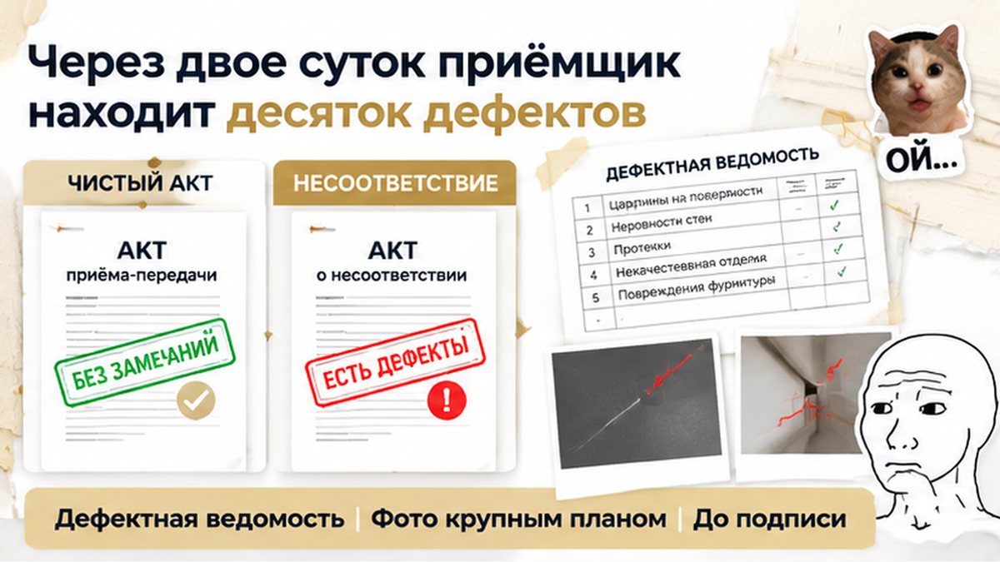
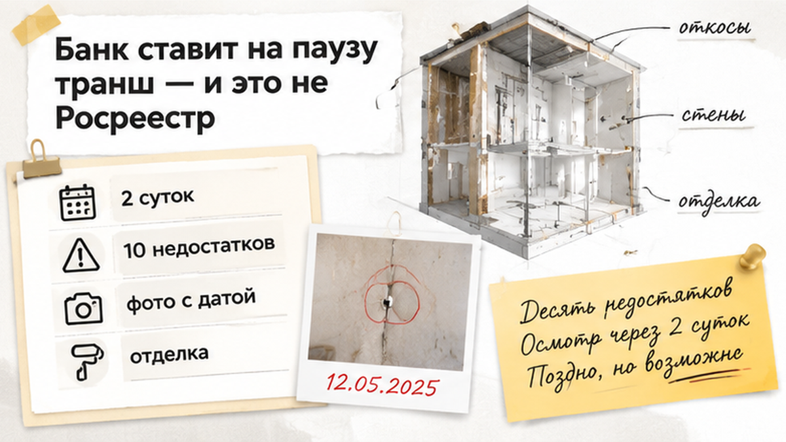
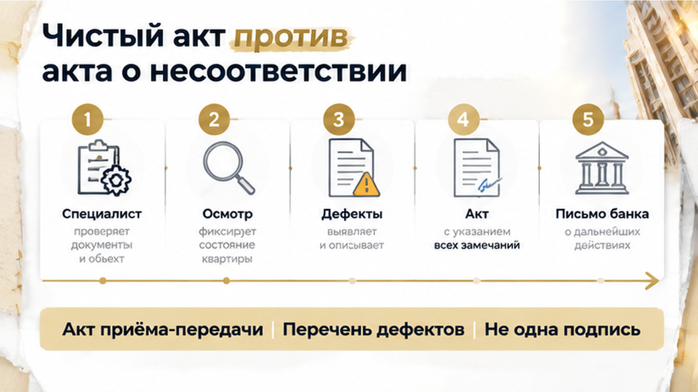
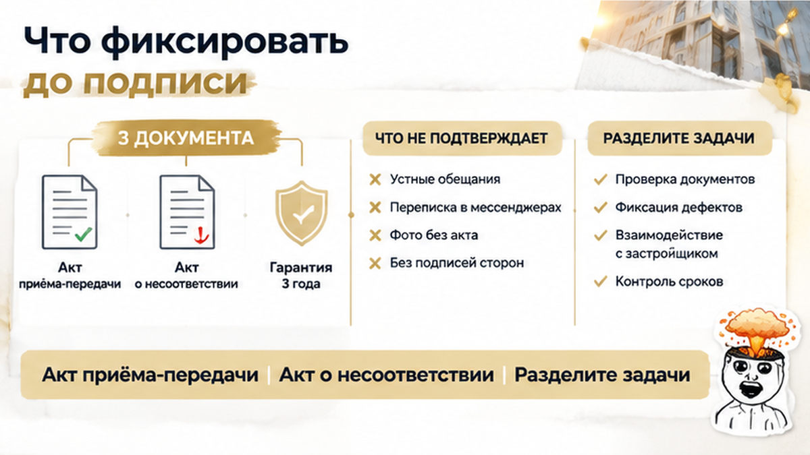

В Тюмени семья приняла новостройку без замечаний, через 2 суток приёмщик нашёл около 10 дефектов — и банк остановил транш. Ключи уже выдали, но следующий банковский этап не двигался. На встрече менеджер предложил сначала подписать акт, а отделку обещал поправить после заселения. Покупатели согласились и позвали независимого специалиста уже в полученную квартиру. Теперь вместо спокойного переезда пришлось выяснять, как подтвердить состояние жилья на день передачи и каких документов ждёт банк.
Я Святослав Шакин, The Риэлтор, Тюмень. Расскажу изнутри, где на приёмке заканчивается удобное «потом исправим» и начинается ответственность покупателя за свою подпись. Разборы документов и покупки квартир публикую в Telegram и MAX.
Предложенный семье порядок звучал по-человечески: забирайте ключи, заселяйтесь, недоделки поправим. Оплачивать исправления покупателям не предлагали — менеджер обещал довести отделку до нужного состояния. Поэтому подпись могла выглядеть не уступкой застройщику, а последним шагом после долгого ожидания квартиры.
Только на бумаге закрепили другую часть разговора: передачу без указанных замечаний, а не перечень недостатков и обещание работ. Устное «сделаем» осталось отдельно от подписанного документа. Покупатель думает: «Мне же обещали исправить. Зачем задерживать ключи?» Но при споре понадобятся записанные замечания и свой экземпляр документа, а не воспоминания об интонации менеджера.
Получить доступ в квартиру и согласиться с описанием её состояния — разные действия. Чистый акт не делает жильё идеальным. Но если видимое повреждение в нём не отмечено, позже придётся подтверждать, что оно было ещё до передачи.
На выдаче ключей хочется проверить главное: дверь открывается, квартира наша, ожидание закончилось. Однако расхождение между обещанным по ДДУ и полученным при передаче разбирают по договору и документам. ДДУ — это договор участия в долевом строительстве, где записано, что застройщик должен передать. Связка ключей сама по себе не подтверждает исполнение каждого условия.

Независимый специалист осматривал уже переданную квартиру. В перечень попали недостатки отделки, стеклопакетов, дверей, сантехники и инженерии. То, что на встрече укладывалось в слово «мелочи», получило предметное описание: теперь можно было обсуждать конкретные замечания.
Пригласить специалиста после передачи — не бессмысленный шаг. Его заключение помогает назвать дефекты, указать их расположение и подготовить требования. Но оно показывает состояние квартиры на дату осмотра, а не автоматически подтверждает наличие всех повреждений в день подписания акта.
«Значит, теперь поздно?» Нет. К перечню недостатков нужны доказательства того, когда они появились или были обнаружены: фотографии, видео, переписка с застройщиком и зафиксированные даты. Поздний осмотр полезен, но запись замечаний непосредственно на приёмке он не заменяет.

Параллельно пришло уведомление банка: ипотечный пакет на паузе, дальнейшее движение — после прояснения документов о передаче квартиры. Семья поняла это как отказ в регистрации права: если документы «не идут», значит, квартиру не дают оформить. Но для следующего шага такой формулировки мало.
Для покупателя ипотека, приёмка и оформление — одна процедура. Однако банк проверяет ипотечный пакет и решает вопросы с траншем, а Росреестр регистрирует право собственности. Сообщение от банка не заменяет решение Росреестра. Дефекты отделки сами по себе не являются типичным основанием для отказа в регистрации.
Сейчас нужен письменный ответ банка: «Какая именно операция остановлена? На каком основании? Что нужно предоставить для продолжения?» Выдача денег, обработка пакета и согласование документов — не одно и то же. Без ответа нельзя утверждать, что деньги остановлены именно из-за недостатков.
Отдельно стоит проверить подачу заявления на регистрацию. С 1 марта 2025 года по части 6 статьи 16 закона № 214-ФЗ застройщик обязан направить его в электронной форме не позднее 30 рабочих дней после подписания передаточного акта. Это срок подачи, а не гарантия регистрации в тот же день.
Я бы выяснял: заявление подано? Что с ним в Росреестре? Чего ждёт банк? В истории, где ипотеку одобрили, а с регистрацией возникла проблема, препятствие было другим. Одинаковое «всё зависло» не означает одинаковую причину.
Подтверждённый итог истории такой: банковский этап остаётся на паузе до прояснения передачи. Подтверждённого отказа Росреестра нет, данных об устранении замечаний и возобновлении обработки пакета — тоже. Семье предстоит предъявлять требования по качеству квартиры и отдельно выяснять основание банковской остановки.
Менеджер говорит: «Подпишите без замечаний, потом всё исправим». Вы бы взяли ключи в этот день или отказались подписывать акт?

«Я уже подписал. Значит, теперь всё за мой счёт?» Нет. Чистый акт означает, что при передаче в нём не указали замечания. Он не отменяет автоматически гарантийные права по скрытым недостаткам. Но спор о видимых повреждениях становится сложнее: нужно подтверждать, когда они появились.
До подписи можно потребовать акт о несоответствии — документ, где зафиксировано, чем квартира не отвечает условиям договора. Такое право даёт часть 5 статьи 8 закона № 214-ФЗ.
В предусмотренной законом ситуации покупатель вправе отказаться от подписания передаточного акта до устранения недостатков. Но советовать «увидели любую царапину — разворачивайтесь» нельзя. Важны характер дефектов, условия договора, обстоятельства передачи и доказательства.
Статья 7 закона № 214-ФЗ предусматривает требования об устранении недостатков, уменьшении цены или возмещении расходов на исправление. Какое требование применимо, зависит от нарушения и действующих правил. Гарантия на объект — не менее трёх лет, на отделочные работы и элементы отделки — не менее одного года.
С 1 января 2025 года действует ограничение взысканий по недостаткам отделки — 3% цены ДДУ. Это не автоматическая выплата за любое замечание и не разрешение оставить остальное неисправленным. Начинать полезнее с перечня недостатков и доказательств, а не с подсчёта компенсации: основу для требований дают документы, не устное «мы же договорились».

На приёмке хочется услышать: «Всё, квартира ваша». Покупатель смотрит на ключи, а профи — на строчку, под которой предлагают расписаться. Не потому, что ждёт подвоха: обещание закончится вместе с разговором, а подписанная бумага останется.
Я бы начал с осмотра и фиксации. Не «окна плохие», а какой стеклопакет повреждён. Не «сантехника не работает», а где и что обнаружили. Точное описание не оставляет места для ответа: «Мы думали, вы про другое».
Снимайте общий план, затем недостаток крупно. Сохраняйте исходные фотографии и видео с датой. Замечания независимого приёмщика полезнее получить до подписания акта, а не догонять документами состоявшуюся передачу.
Видимые дефекты нужно не только сфотографировать, но и внести в документ. До подписи потребуйте акт о несоответствии — бумагу, где записано, в чём квартира не отвечает договору. Это право предусмотрено частью 5 статьи 8 закона № 214-ФЗ. Но отказ от подписания зависит от характера недостатков и обстоятельств передачи: не любая царапина даёт основание не принимать квартиру.
Документ может называться смотровым листом, дефектной ведомостью или приложением. Важно, указаны ли квартира, дата, конкретные недостатки и связь с передаточным актом. Ваш экземпляр должен остаться у вас, а не уйти с менеджером «на оформление».
На обещание «потом всё поправим» ответьте: «Давайте запишем, что именно нужно исправить и в какой срок». Это не скандал. Вы просто закрепляете устную договорённость на бумаге.
Если акт уже подписан, собирайте заключение специалиста, снимки, переписку и направляйте обоснованные требования. Чистый акт не отменяет автоматически права по скрытым недостаткам. Но гарантия не означает, что любое повреждение признают ответственностью застройщика без выяснения причины.
На такой приёмке полезно разделить работу на три задачи: проверить квартиру, закрепить замечания и отдельно собрать документы для ипотечного этапа. Не пытайтесь решить всё одной подписью. До подписания акта можно подключить специалиста, составить дефектную ведомость и передать её застройщику. Параллельно агент проверит договор, передаточный акт и перечень документов, который требуется банку.
После осмотра следующий шаг — не спорить со всеми сразу, а передать каждому участнику его часть работы. Приёмщик фиксирует состояние квартиры. Агент сверяет документы и сроки. Покупатель получает свои экземпляры и не подписывает бумаги, пока не понимает формулировки. Если нужно, подготовленные вопросы и замечания можно направить до подписания, а не возвращаться к ним после оформления.
| Документ | Что проверить | Чего он не подтверждает |
|---|---|---|
| Акт приёма-передачи | Дату, описание квартиры, формулировки о замечаниях, ссылки на приложения. | Что банк завершил обработку ипотечного пакета и все этапы оформления закончены. |
| Акт о несоответствии или документ с дефектами | Конкретный перечень, расположение недостатков, дату, связь с квартирой. Свой экземпляр забрать. | Что любой заявленный ремонт автоматически оплатит застройщик. Нужны основания и доказательства. |
| Письменный ответ банка | Остановленную операцию, основание паузы, список необходимых документов. | Что Росреестр приостановил регистрацию или отказал в ней. |
В Telegram и MAX рассказываю изнутри, как проходят покупки и приёмки в Тюмени. Без «просто подпишите»: разбираю, что проверить в бумагах и какие вопросы задать до решения.
Если предстоит приёмка, разумно разделить задачи заранее: специалист осматривает квартиру и фиксирует недостатки, агент проверяет документы и взаимодействие с банком, покупатель получает полный комплект бумаг и принимает решение до подписи. Передать такую работу можно до оформления — пока замечания ещё легко внести в документы.
Ключи в руках — не то же самое, что завершённая покупка. Поэтому до подписания лучше передать акт, дефектную ведомость и банковские документы специалисту, который разложит их по задачам. Тогда решение принимается не под давлением менеджера, а после проверки: что фиксируем, кому направляем и какие шаги выполняем дальше.